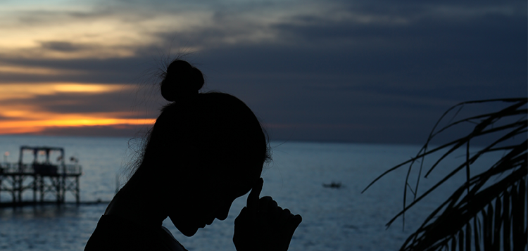

新新007
巴厘岛 | 世界上最佳的岛屿之一“绮丽之岛”
2019-05-01 3628 浏览

巴厘岛上大部分为山地，全岛山脉纵横，地势东高西低。岛上最高峰是阿贡火山海拔3142米。巴厘岛是印度尼西亚唯一信奉印度教的地区。80%的人信奉印度教。当地的语言是巴厘语，也通行印尼语和英语。由于巴厘岛万种风情，景物甚为绮丽。因此它还享有多种别称，如“神明之岛”、“恶魔之岛”、“罗曼斯岛”、“绮丽之岛”、“天堂之岛”、“魔幻之岛”、“花之岛”等。2015年由美国著名旅游杂志《旅游+休闲》一项调查结果把印尼巴厘岛评为世界上最佳的岛屿之一。